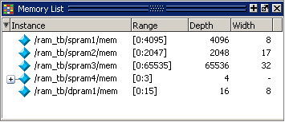
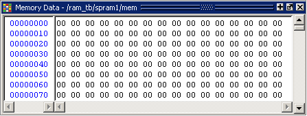

View a Memory and Its Contents
The Memory List window lists all memory instances
in the design, showing for each instance the range, depth, and width.
Double-clicking an instance opens a window displaying the memory
data.
Procedure
- Open the
Memory List window and view the data of a memory instance.
- If the
Memory List window is not already open, select .
A Memory List window is shown in Figure 1.
Figure 1. The Memory List Window - Double-click
the /ram_tb/spram1/mem instance
in the memory list to view its contents.
A Memory Data window opens displaying the contents of spram1. The first column (blue hex characters) lists the addresses, and the remaining columns show the data values.
If you are using the Verilog example design, the data is all X (Figure 2) because you have not yet simulated the design.
Figure 2. Verilog Memory Data Window
If you are using the VHDL example design, the data is all zeros (Figure 3).
Figure 3. VHDL Memory Data Window - Double-click the instance /ram_tb/spram2/mem in the Memory List window. This opens a second Memory Data window that contains the addresses and data for the spram2 instance. For each memory instance that you click in the Memory List window, a new Memory Data window opens.
- If the
Memory List window is not already open, select .
- Simulate
the design.
- Click
the Run -All icon in the Main
window.

A Source window opens showing the source code for the ram_tb file at the point where the simulation stopped.
VHDL: In the Transcript window, you will see NUMERIC_STD warnings that can be ignored and an assertion failure that is functioning to stop the simulation. The simulation itself has not failed.
- Click
the Run -All icon in the Main
window.